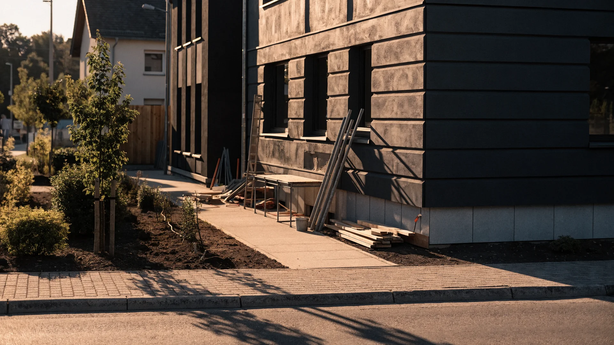

Unterbau & Planum
Tragfähige Vorbereitung und saubere Höhen als Basis für die Pflasterfläche.

Leistung · BG Bauland
Belastbare Flächen entstehen durch einen sorgfältigen Unterbau, exakte Höhen und eine präzise Verlegung bis ins Detail.
Leistungsbeschreibung
Professionelle Pflasterarbeiten verbinden eine solide Vorbereitung mit präziser handwerklicher Ausführung. BG Bauland erstellt funktionale und optisch klare Flächen für Zufahrten, Wege, Höfe und Terrassen.
Unterbau, Gefälle, Einfassungen und Verlegemuster werden auf Nutzung und Bestand abgestimmt. Das Ergebnis sind belastbare Flächen mit sauberen Anschlüssen und einem geordneten Gesamtbild.
Enthaltene Leistungen
Material, Format und Ausführung werden passend zur Nutzung und zur Gestaltung der Außenfläche abgestimmt.
Tragfähige Vorbereitung und saubere Höhen als Basis für die Pflasterfläche.
Belastbare Flächen für Fahrzeuge, Zugänge und tägliche Nutzung.
Präzise verlegte Flächen für komfortable und klar geführte Außenbereiche.
Saubere Abschlüsse zur Stabilisierung und optischen Gliederung.
Anpassung und Ergänzung bestehender Pflasterflächen und Anschlüsse.
Warum BG Bauland?
Von der Vorbereitung bis zur letzten Fuge achten wir auf belastbare Lösungen und ein sauberes Erscheinungsbild.

Projekt besprechen
Teilen Sie uns mit, welche Fläche entstehen oder erneuert werden soll. Wir besprechen die passende Ausführung mit Ihnen.